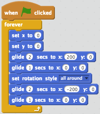
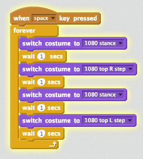

by Sarthak Navjivan
sarthak@codetocreate.org

back to course
Scratch
Lesson 1: Creating a Music Video
You are now truly beginning your journey into Computer Science. In this tutorial, we are building a short music video. To make a music video, you need a Sprite (or scratch character), dance moves, scenery, and music. By the end of this tutorial, you'll understand that much like dancing is a series of body motions, programming is coding a series of steps that a computer can understand, also known as procedures. If you do not get it right away, you'll hopefully understand by the end of this tutorial.
Using Motions & Events
Click on the Events tab. Drag and drop the event command "when green flag clicked" to the right hand side of the page. See the image below for clarification.
Click on the motion. Drag and drop "move ten steps" such that it connects with the Events command. See image below for clarification.
Click on the green flag in the Sprite compiler and watch the Scratch Cat move every time you press the green flag.
Drag and drop as many motions so you have a complete dance move. If you’re stuck, see the image below and check out how to do the first three steps of the moon walk.
Defining Procedures
We learned that dance moves are a series of instructions. A series of instructions is also known as a procedure. In computer science, programs are run by many procedures where each procedure houses a series of instructions. We also learned that an event triggers the series of motions. When the flag is clicked, the Sprite will execute a series of motions. Computer programs can also run when triggered by an "Event".
Controlling the Dancing Routine
Next, we will be learning how to control your dance moves through the coordination of events Now that you have a groovy dance move. Under Events, click on Control. Drag and drop any of the first three Control command blocks. See below for an example.

Figure 1. Forever Loop Motion Using the forever control block, I am looping the dance procedure to run FOREVER. A loop is an important computer science concept that you will be learning in your future programming.
We will add a backup dancer whose routine will be triggered by another Event block. Click on the symbol next to “New Sprite” to create your backup dancer.
For your backup dancer, choose an Event block that will trigger a series of costume changes, then create dance procedure, and finally add a Control block. See the image below, if you need some inspiration. A costume change is another of way of changing a static image to elaborate motion.

Add a costume change block to the Scratch Cat’s dance routine. Great now we just have to add a backdrop and some music to make the music video complete!
Relationship between Control and Events
We learned that we can control how to execute motion command blocks. These motions can run forever, repeated, or synced with time. Imagine you are dancing in your own music video and you come up with a routine. How would you control your motions? What series of steps would you execute. We also learned that we can coordinate the motions of the main dancer and the backup dancer by controlling which Events trigger their dance moves.
Setting the Scene and Dancing to Music
We will wrap up our first tutorial by introducing music and scene changes!
In the bottom left quadrant of the screen, click on new backdrop and select one to start your music video with.
Select another backdrop and change the backdrop according to your main dancer’s motions by inserting a switch backdrop command block from the looks tab.
Click on the Sounds tab and select what musical sounds you would like to use in your music video.
Go to the Sounds scripts and cue the music to your character’s dance moves. See the image below of an example of how to implement sound change with your main dancer’s moves.
Controlling Back Drop Events with Sounds
We learned to control backdrop changes with sounds. In computer science, advanced programs are made up of different components that can work in dependence or independence of each other. If you are dancing in a music video, what cues would you give yourself to remember which dance to do at which time? Would you listen for a specific word, wait for a background or costume change, or would you wait for a specific motion from a backup dancer?
Congratulations you have finished your Scratch tutorial! Now you know the basics, go over and create a more complex music video with sounds or explore other Scratch music videos, there are some phenomenal ones out there that are downright groovy!
NEXT Brick Breaker
Learn about cloning sprites and object-oriented programming by creating a game where a ball destroys objects placed on the screen
BACK
A simple, fun, and colorful introduction to computer science